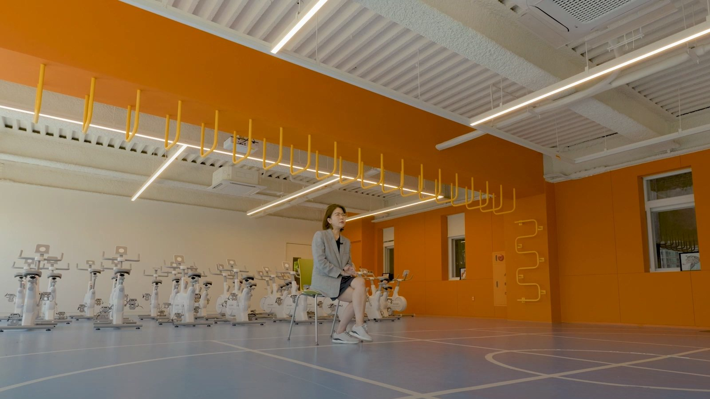

역할 · 기획 · 촬영 · 편집
기업 브랜딩 영상, 공간과 사람으로 회사의 철학을 보여주는 인터뷰 필름
공간 디자인 회사의 브랜딩 영상을 기획부터 촬영, 편집까지 맡아 만들었습니다. 담당자 인터뷰를 회사가 직접 디자인한 공간 한가운데서 찍어, 말로 설명하는 내용을 화면으로도 바로 확인할 수 있게 했습니다. 인물을 작게 두는 넓은 구도로 공간의 색과 규모가 함께 보이도록 촬영했습니다.

역할 · 기획 · 촬영 · 편집
공간 디자인 회사의 브랜딩 영상을 기획부터 촬영, 편집까지 맡아 만들었습니다. 담당자 인터뷰를 회사가 직접 디자인한 공간 한가운데서 찍어, 말로 설명하는 내용을 화면으로도 바로 확인할 수 있게 했습니다. 인물을 작게 두는 넓은 구도로 공간의 색과 규모가 함께 보이도록 촬영했습니다.